Massenspeicher-Auswertung¶
Die Massenspeicher-Auswertung verwendet genau eine ausgewählte M-Datei als Basis. Fahrer, Slots und Kartensitzungen bleiben getrennt; C-Dateien ergänzen nur den Vergleich innerhalb nachweisbarer Steckzeiten.
Übersicht¶
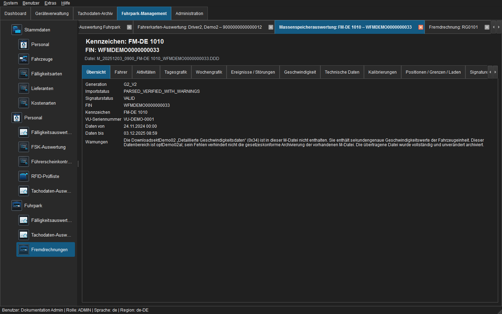
Abbildung: Generation, Signatur, Fahrzeugidentität, Datenzeitraum und Parserwarnungen.Warnungen benennen optionale oder unvollständige Downloadsektionen. Fehlt beispielsweise die sekundengenaue Geschwindigkeit, bleibt die vorhandene M-Datei dennoch unverändert archiviert.
Fahrer¶
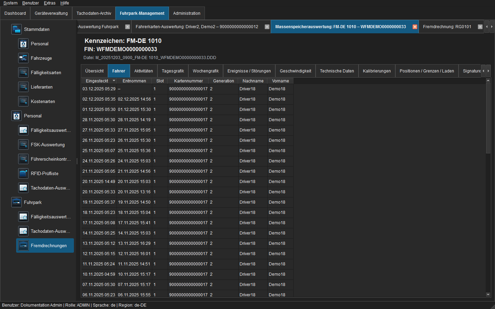
Abbildung: Einsteck-/Entnahmezeit, Slot, Karte, Generation und Name.„Ohne zugeordnete Fahrerkarte“ bedeutet, dass für Slot und Zeitraum kein verwertbares Kartensteckintervall ermittelt wurde. Es bedeutet nicht lediglich, dass keine C-Datei archiviert ist; der Tooltip in den Grafiken erläutert die Unterscheidung.
Aktivitäten¶
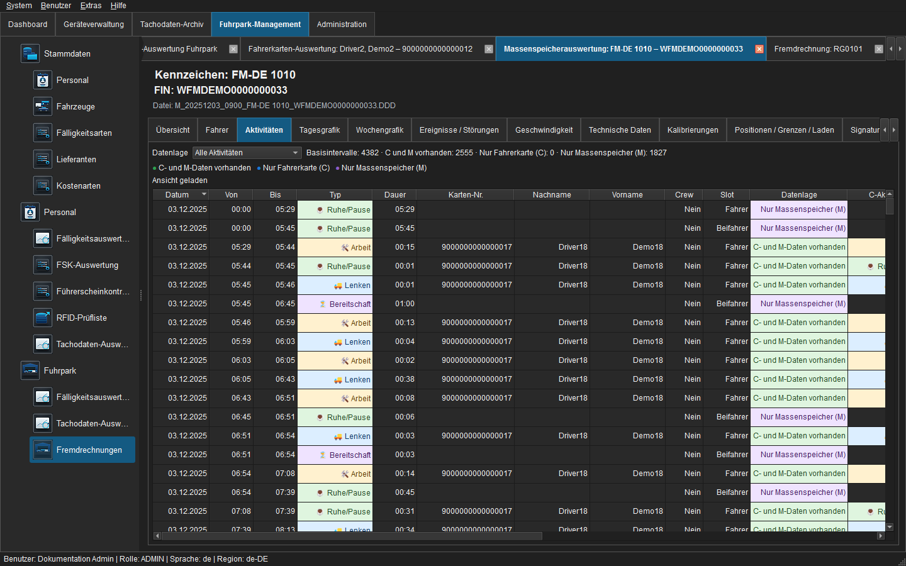
Abbildung: Fahrzeugbezogene Aktivitätsintervalle mit Datenlage.Fahrerwechsel und Teamfahrt werden nach Kartennummer, Generation und Slot getrennt. Zwei parallele Fahreraktivitäten werden niemals zu einer Fahrerzeile verschmolzen.
Tagesgrafik¶
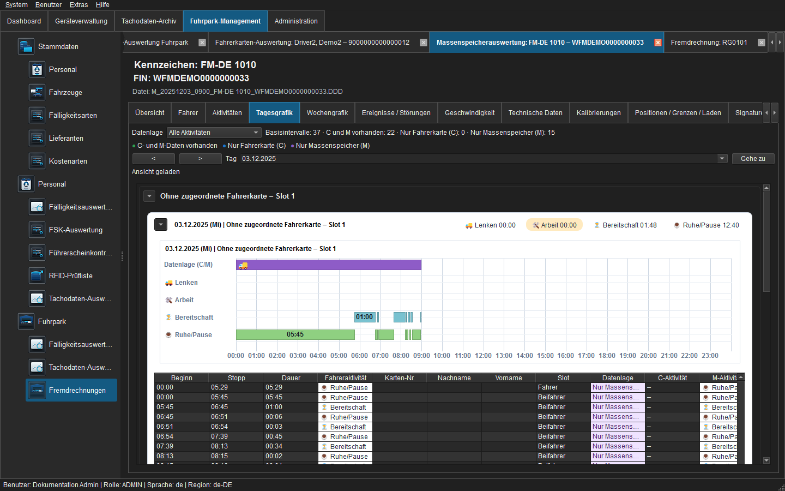
Abbildung: Fahrergruppen, Steckzeit und Aktivitätsspuren eines UTC-Tages.Die Navigation ist ausschließlich an das Datum gekoppelt. Fahrername und Kartennummer stehen in den Gruppen. Tooltips auf unbekannten Kartengruppen erklären deren Datenbasis.
Wochengrafik¶
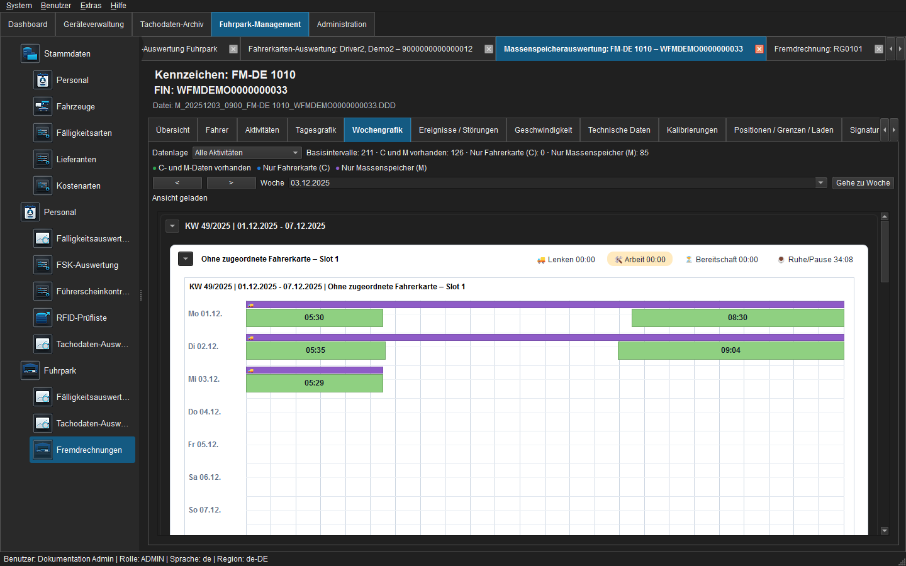
Abbildung: Eine ISO-Woche mit getrennten Fahrer-Panels.Jede Kalenderwoche erscheint einmal. Mehrere Steckzeiten desselben Fahrers werden innerhalb seines Wochenpanels zusammengeführt; Fahrerwechsel und Teamfahrer bleiben getrennt.
Ereignisse und Störungen¶
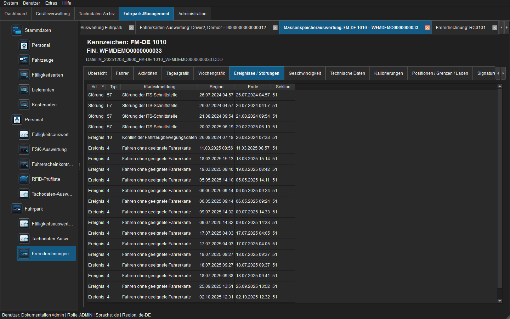
Abbildung: Records mit Code, Klartextmeldung, Beginn, Ende und Sektion.Geschwindigkeit¶
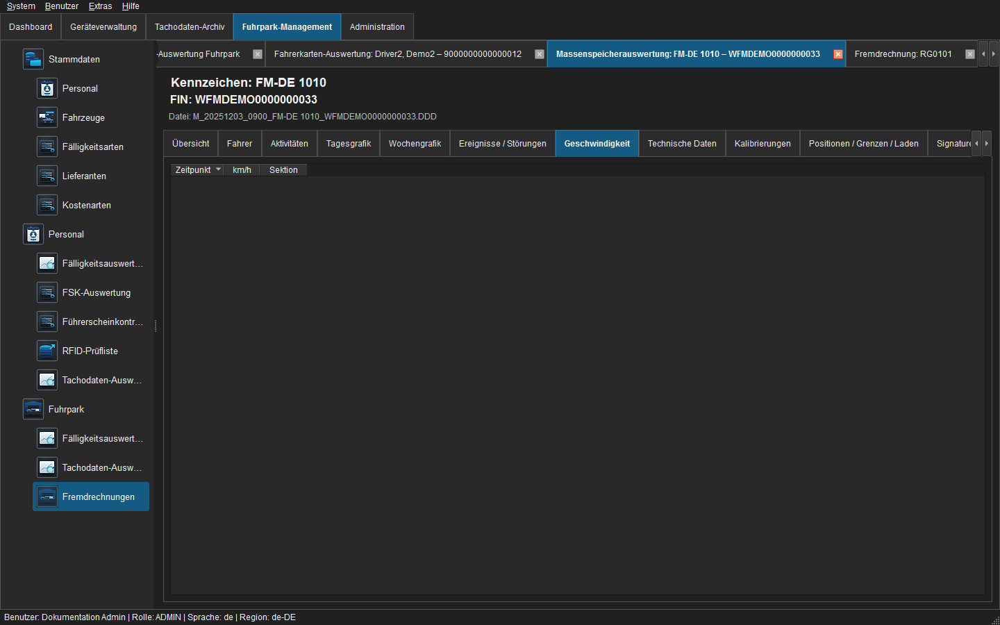
Abbildung: Sekundengenaue Geschwindigkeit oder dokumentierter Leerzustand.Der Tab zeigt ausschließlich tatsächlich enthaltene Geschwindigkeitsrecords. Ein Leerzustand wird nicht durch berechnete oder künstliche Daten ersetzt.
Technische Daten¶
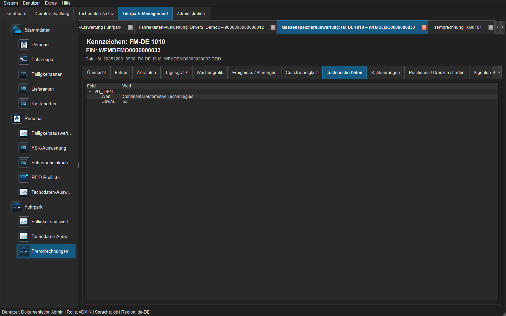
Abbildung: Verständlicher Feldbaum für Hersteller, Gerät, Software und Zulassung.Der Baum erhält den Bezug zur Downloadsektion. Unbekannte optionale Records bleiben als begrenzter Rohbezug erhalten.
Kalibrierungen¶
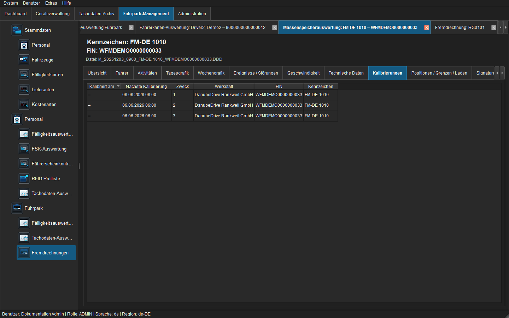
Abbildung: Kalibrierzeit, nächste Kalibrierung, Zweck, Werkstatt, FIN und Kennzeichen.Bei der Fahrzeuganlage verwendet FLEET Mira den chronologisch neuesten geeigneten Datensatz für die separate Kalibrierungsfälligkeit.
Positionen, Grenzen und Laden¶
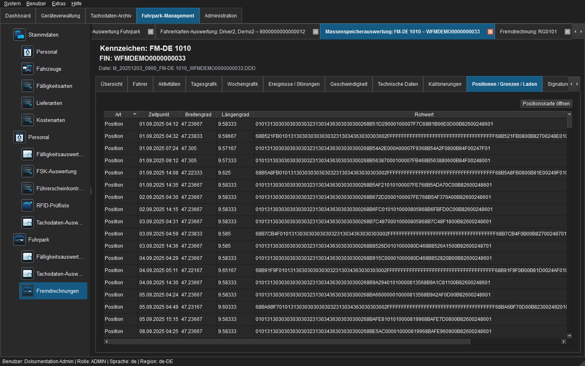
Abbildung: Zeit- und Ortsrecords der ausgewählten M-Datei.Die Liste kombiniert GNSS-Positionen, Grenzübertritte sowie Be-/Entladevorgänge, ohne ihre fachliche Art zu verlieren. Koordinierte Records können gemeinsam auf der Karte geöffnet werden.
Signaturen¶
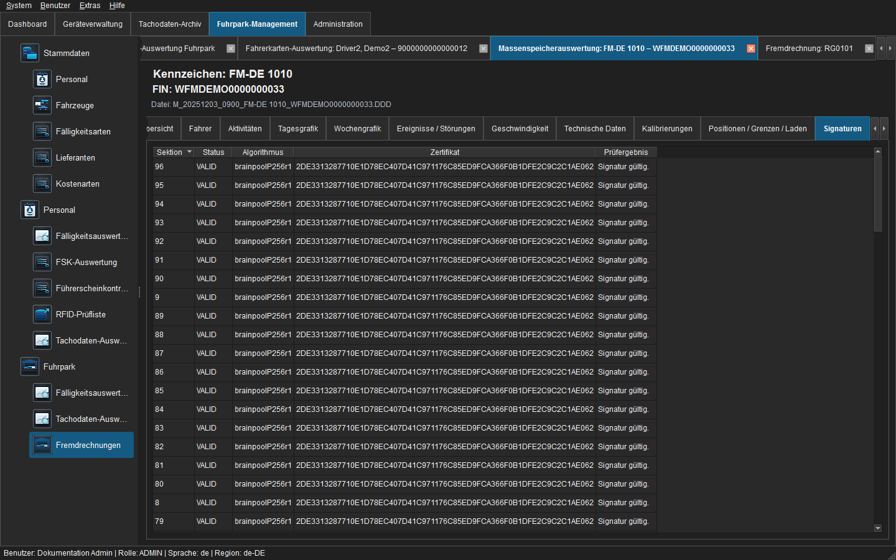
Abbildung: Einzelprüfung der signierten Downloadsektionen.Verstöße¶
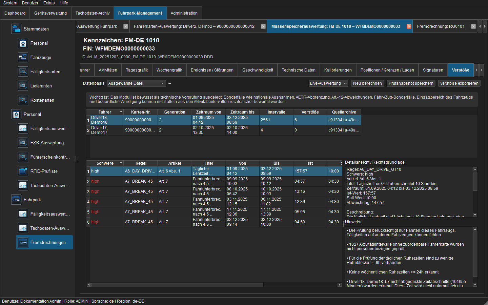
Abbildung: Fahrergetrennte Vorprüfung und Hinweise zur Datenabdeckung.Im Modus Ausgewählte M-Datei werden nur Fahrten dieses Fahrzeugs geprüft. Vollständige Fahrerhistorie kann weitere vertrauenswürdige C-/M-Archive ergänzen. Unbekannte Kartenintervalle werden als Hinweis, nicht als personenbezogener Verstoß behandelt.